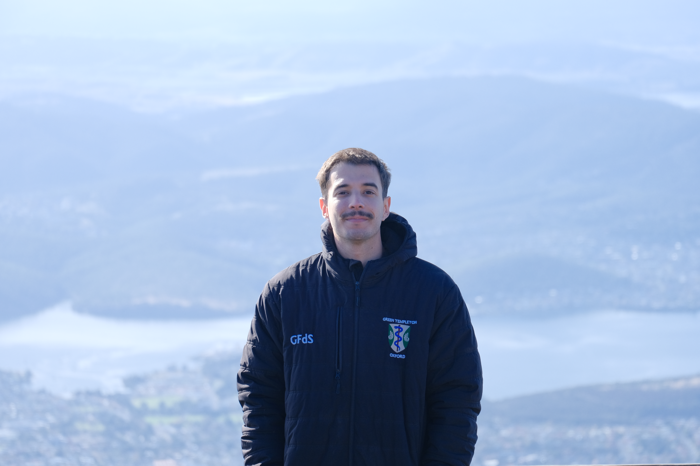

Photography Gllry
Minimal frames, chill atmosphere, letting images breathe like they should.
Gllry blends nature, streets and concept... or at least it tries to.
Gllry
Bits and pieces from recent shoots, nothing too serious..
Filters
Presets and camera moods I keep going back to for some reason.

assets/about/profile.jpg
About
A bit about me, the gear I actually use, and where you can find my work.
I started taking photos out of British boredom, but at the time grey, dark environments really weren't my thing. Now in the Gold Coast, it's a pleasure to photograph people and places enjoying the best of the Australian weather.
Street portraits, people surfing, beaches, anything that might go unnoticed in the rush of everyday life, but when captured ends up telling a story.
Equipment
Cameras Fujifilm XT30ii, Action 5 Pro
Lenses Fujifilm 18-55mm f3.5, Fujifilm 50-230mm f/4.5, 7Artisan 18mm f6.3
Accessories Variable ND2-400, Black Mist 1/4, UV filter